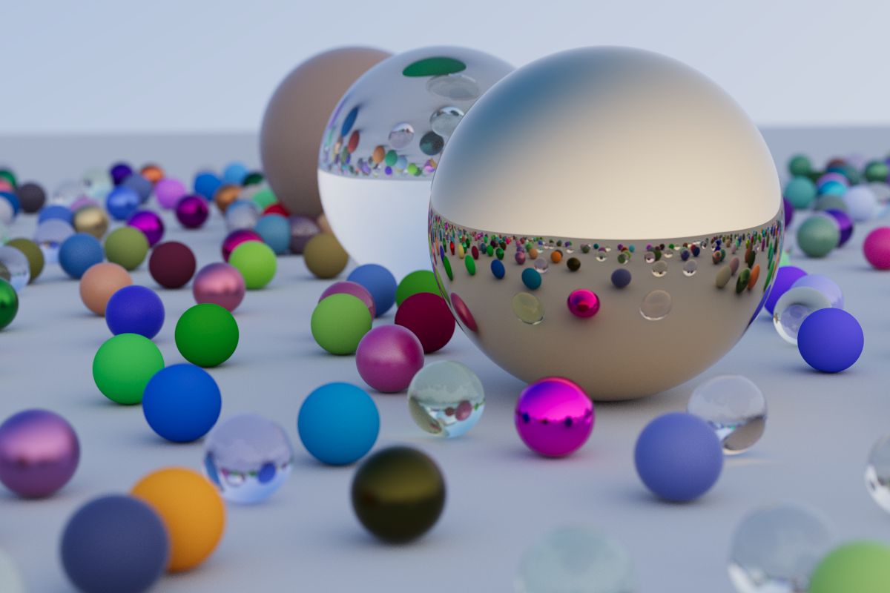
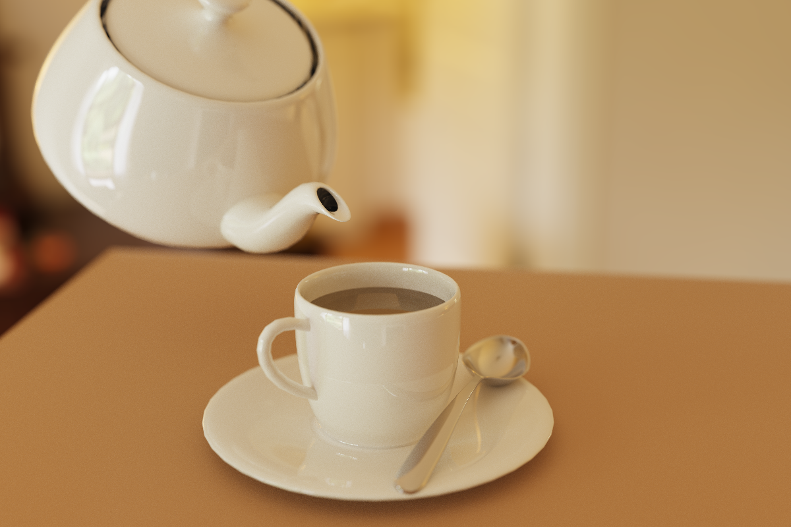
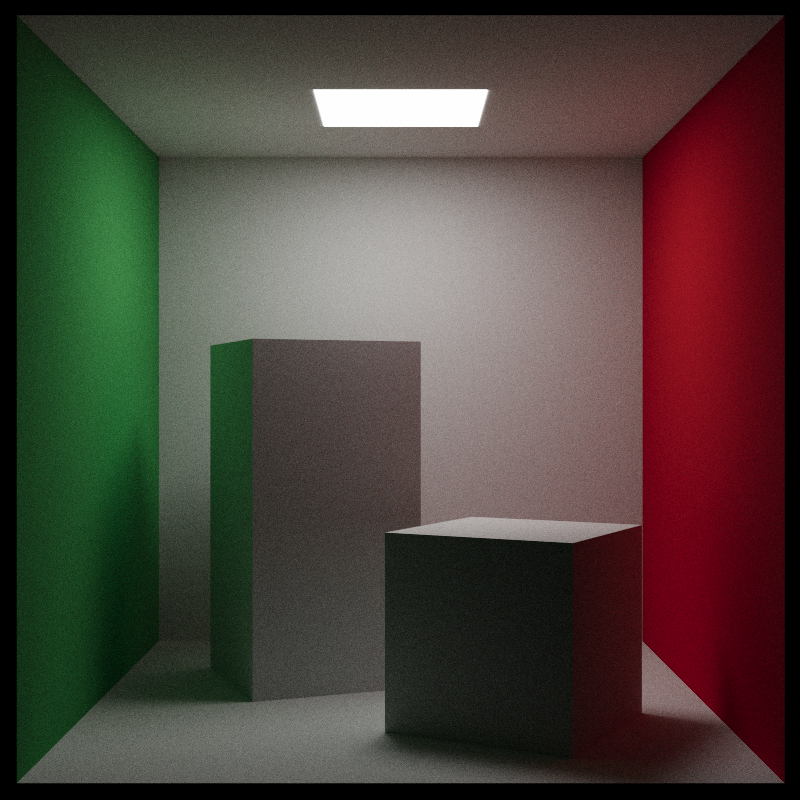
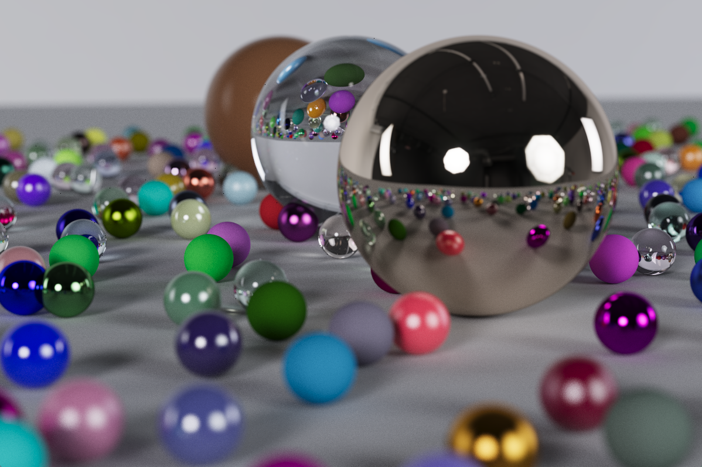

Path-tracing




by Timothy Clocksin
Discription
A monte carlo path-tracer written in Rust following the "Raytracing in One Weekend" book. I used this project both as a way to build my skills with rendering and to better learn Rust.
Usage
rust_raytracer.exe [OPTIONS] [SCENE]
Arguments:
[SCENE] Scene file to use
Options:
-s, --samples [SAMPLES] Number of samples per pixel [default: 128]
-p, --passes [PASSES] Number of frames to cumulate [default: 64]
-b, --bounces [BOUNCES] Max number of times a ray can bounce [default: 8]
--width [WIDTH] Pixel width of frame [default: 640]
--height [HEIGHT] Pixel hight of frame [default: 480]
-g, --gamma [GAMMA] Gamma level [default: 2.2]
-l, --light-clamp [LIGHT_CLAMP] Max light brightness [default: inf]
-f, --filter apply bilateral filter after render to reduce noise
-h, --help Print help
-V, --version Print version